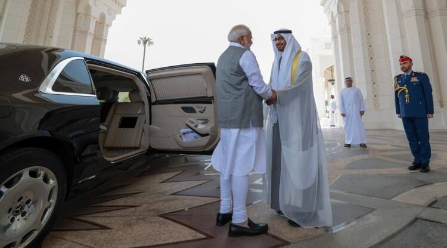

PM Modi UAE Visit Live Updates: India, UAE to start trade settlement in local currencies, says PM Modi in Abu Dhabi
PM Modi in UAE News Live Updates: PM Modi said that he hopes that bilateral trade between the two countries goes past the $100 billion-mark soon, as it currently stands at $85 billion.Breaking News

PM Narendra Modi UAE Visit Live Updates (Today (July 15): In a boost to bilateral trade and investments, Prime Minister Narendra Modi, who is in Abu Dhabi today holding talks with UAE President Sheikh Mohamed bin Zayed Al Nahyan, announced that India and the United Arab Emirates have agreed to start trade settlement in local currencies. PM Modi said that he hopes that bilateral trade between the two countries goes past the $100 billion-mark soon, as it currently stands at $85 billion. Read More
Additional content for breaking news...
India
Chandrayaan-3 will give a quantum leap to India’s role in global arena, world watching: Space Minister
Chandrayaan-3 will give a quantum leap to India’s role in global arena, world watching: Space Minister
The Chandrayaan series is significant to India’s space programme because it was the first to prove to
the world that we had tremendous potential. Even though we started out much later than other
space-faring countries — when our space programme began, the US and the USSR were already on the
verge of landing on the moon — it was the Chandrayaan 1 mission that confirmed the presence of water
molecules on the moon.
The world realised that India is in a position to provide insights, inputs, and inferences that
could be of utility to them as well for future missions. Today, we are equal partners. The
Chandrayaan-3 is going to give a quantum leap to India’s role in the global arena. The entire world
is watching — what we learn from this mission will be important for the global scientific community
at large.
Read
More
Additional content for India news...
World
US, China aim to revive climate cooperation as tensions simmer
Republicans have accused the Biden administration of being too soft on Beijing in climate diplomacy, arguing that China continues to increase its greenhouse gas emissions while the United States imposes costly measures to clean up.
The United States and China will look to revive efforts to combat global warming this week, in
bilateral meetings that observers hope will raise the bar on ambitions ahead of UN-sponsored climate
talks in late 2023.
The talks follow two other high-level U.S. visits to China this year, as the world’s largest
greenhouse gas emitters work to stabilize a relationship strained by trade disputes, military
tensions and accusations of spying.
John Kerry, the U.S. special envoy on climate change, will join bilateral talks with his Chinese
counterpart Xie Zhenhua in Beijing from July 16-19 that will focus on issues including reducing
methane emissions, limiting coal use, curbing deforestation and helping poor countries address
climate change.
The pair, who have cultivated a warm relationship over more than two decades of diplomacy, will also
likely discuss China’s objections to U.S. tariffs and other restrictions on imports of Chinese solar
panel and battery components, observers say.
Read
More
Additional content for world news...
Latest News
One killed in clash at Ramdev herbal park, police deployed
On Wednesday, violence had erupted near the Patanjali Food and Herbal Park following a demonstration held by the local truckers’ union.
A day after one person died in a bloody fight at yoga guru Ramdev’s Patanjali Food and Herbal Park,
the district administration has deployed police inside the campus to prevent another violent clash
at Haridwar’s Padartha village.
Police are investigating the matter after lodging an FIR under sections 302, 307, 147, 148, 149, 504
of the IPC.
Three persons, including Ramdev’s brother Ram Bharat, have been named as accused in the case.
[related-post]
“We will undertake search operations again to collect evidence from the food park,” Haridwar SSP
Sweety Agrawal told The Indian Express.
“Two others named in the case are Yogesh and Anand Goswami,” she said.
The autopsy report revealed that Daljeet, a local transporter involved in the clash, died due to
injuries after being beaten up.
On Wednesday, violence had erupted near the Patanjali Food and Herbal Park following a demonstration
held by the local truckers’ union.
Local transporters were protesting an alleged move by the food park management to deny them
assignments to transport products from the park to different parts of the country.
Read
More
Additional content for latest news...
Entertainment
Kohrra: Netflix’s engrossing new show asks questions that most Indian crime dramas avoid, and one scene captures why it’s a cut above the rest
Post Credits Scene: Led by excellent performances by Suvinder Vicky and Barun Sobti, Netflix's new crime drama Kohrra is the rare Indian streaming show that doesn't talk down to its audience, and welcomes introspection.
“You know what the tragedy of our Punjab is?” sub-inspector Balbir Singh drunkenly asks his rookie
partner Garundi in one scene. The two police officers, played by Suvinder Vicky and Barun Sobti,
often get together for a series of soul-baring sessions over late night drinks in Netflix’s new
crime drama, Kohrra. These are the show’s best scenes, devoted entirely to developing character and
little else. When Singh rues the state of Punjab, he doesn’t wait for Garundi to answer. “It’s our
‘mitti pao’ attitude,” he says, finally expressing the guilt that he feels for having served a
corrupt system for so many years.
We often complain about how the crime genre is handled in mainstream Hindi-language cinema. Far too
frequently, audiences are subjected to scenes of empty violence, or plot-heavy stories populated by
cardboard cut-outs and not real people. Singh’s sentiment is directed at corrupt superiors who, in
his opinion, have left Punjab in drug-fuelled, crime-infested disarray.
Read
More
Additional content for entertainment news...
Sci/Tech
US appeals court refuses FTC request to pause Microsoft deal for Activision
The deal, the largest in the history of the videogame industry, still needs to be approved in Britain.
A U.S. appeals court on Friday rejected the Federal Trade Commission’s request to pause Microsoft’s
$69 billion purchase of “Call of Duty” maker Activision Blizzard.
The decision removes one of the few remaining hurdles stopping Xbox maker Microsoft from closing the
deal and expanding its gaming business.
The FTC had also asked Judge Jacqueline Scott Corley of the U.S. District Court in northern
California for a similar stay but she rejected that request late on Thursday.
The FTC did not immediately return a request for comment.
Microsoft President Brad Smith said: “We appreciate the Ninth Circuit’s swift response denying the
FTC’s motion to further delay the deal. This brings us another step closer to the finish line in
this marathon of global regulatory reviews.”
The deal, the largest in the history of the videogame industry, still needs to be approved in
Britain.
Now that its latest appeal has been rejected, the FTC may drop the fight, as it has in similar
situations in the past. This happened most recently in February with Meta Platforms’ purchase of
virtual reality content maker Within Unlimited. The FTC lost in federal court and dropped the
challenge.
The merger agreement between Microsoft and Activision will expire on July 18. After July 18, either
company will be free to walk away from the deal unless they negotiate an extension.
Read
More
Additional content for sci/tech news...
Education
Perfect score in 6 CUET subjects, UP teenager sets her sights on dream college at DU
Among the four candidates in the country to have topped six subjects in CUET this year, the 18-year-old aims to pursue BA (Hons) Political Science.
Among the four candidates in the country to have topped six subjects in CUET this year, the
18-year-old aims to pursue BA (Hons) Political Science.
When it comes to CUET preparation strategy, Agrawal started right after her Class 12 Board exams in
which she scored 99 per cent. “I had no time to waste. As soon as I was done with my Board exams, I
started preparing for CUET UG. The syllabus was the same and the NTA (National Testing Agency) was
very clear that all the questions would be NCERT-based, so I started studying from NCERT. And I
think that is what helped me the most,” she tells The Indian Express.
The seven subjects that Agrawal appeared for were English, Economics, Fine Arts/Visual
Arts/Commercial Art, Geography/Geology, History, Political Science and General Test. She scored 100
percentile in all but the General Test, in which she attained a 99.91 percentile score.
Besides early preparation, what helped Agrawal was appearing for mock tests. “I maintained a
register in which I noted the days remaining till the exam date on one side, and the subjects on the
other. I planned my preparation strategy according to that and started solving one mock test for
each subject every day,” she says, adding she solved “nearly 100 mock tests in a month”.
Read
More
Additional content for education news...
Business
Gaming start-ups ping Centre to reconsider uniform 28% GST levy
Taxing online gaming to the point of “unviability,” contradicts the Prime Minister’s vision to be a leader in the online gaming space, the letter, which was signed by Mobile Premier League, Winzo, and industry associations representing companies like Dream11, among others said.
India’s online gaming start-ups that offer fantasy and real-money games have written to the government urging it to reconsider the recent decision to impose a 28 per cent Goods and Service Tax (GST) on the full face value of pool deposit. They said that the decision has left the industry in “significant distress” and could have “devastating implications” for the companies, including a shut down of businesses.
Taxing online gaming to the point of “unviability,” contradicts the Prime Minister’s vision to be a leader in the online gaming space, the letter, which was signed by Mobile Premier League, Winzo, and industry associations representing companies like Dream11, among others said.
The development follows the GST Council’s decision to levy a uniform 28 per cent tax on full face value for online gaming, casinos and horse-racing. The government is expected to bring in a legal amendment to facilitate this in the monsoon session of Parliament, which will enable inclusion of online gaming and horse racing under actionable claim and hence, facilitate taxation of these categories with no distinction for game of skill or chance.
Read
More
Additional content for business news...
Politics
Congress’s top legal minds favour ‘nuanced approach’ on UCC
“We will support aspects like equality of inheritance. But we will oppose the imposition of uniformity," a senior leader said.
The top legal minds of the Congress met on Saturday to discuss the issue of Uniform Civil
Code and
are learnt to have decided to advise the party leadership to take a nuanced position on the matter
and declare the party’s stand only after perusing the draft Bill in the event of the government
bringing such a legislation in Parliament.
Senior Congress leaders P Chidambaram, Salman Khurshid, Abhishek Singhvi, Vivek Tankha, Manish
Tewari and K T S Tulsi met and discussed the legal and social aspects of UCC for over one and a half
hours. The informal panel will give a report to Congress president Mallikarjun Kharge.
Sources said the leaders were of the view that the party should take a “nuanced” view on UCC as the
issue is layered and complex. The BJP, the leaders felt, would want the Congress to spell out a
position in favour or against the UCC, but the party will have to factor in various aspects before
taking a position.
The Congress had earlier this month decided to wait for the BJP government to take the next step on
UCC and come out with a draft Bill. It had refrained from “rushing in” with its opposition to the
idea in the absence of a Bill. The leaders who attended the meeting said the party was opposed to
the idea of uniformity and viewed UCC as “an assault on diversity”.
Read
More
Additional content for politics news...
Sports
Jasprit Bumrah bowling at full-throttle, expected to return for Ireland tour next month
After undergoing back surgery in March, India pacer had resumed bowling last month after successfully undergoing rehabilitation at the NCA.
Jasprit Bumrah who could shape Team India’s campaign at the upcoming 50-over World Cup, is close to
regaining full-fitness and is in line to tour with the Indian white-ball team for the T20Is in
Ireland next month. The pacer, who is currently training at the National Cricket Academy in
Bengaluru, has been gradually increasing his workload and so is Shreyas Iyer, who has resumed
batting.
Bumrah, who underwent a back surgery in March, had resumed bowling last month after successfully
undergoing rehabilitation at the NCA. His rehab programme has been continuing under the watchful
eyes of BCCI’s head of cricket VVS Laxman, and he is bowling full throttle at the nets, where he is
sending down 8-10 overs.
While the selectors and the team management were looking to include Bumrah for the Asia Cup in
September, the progression he has made in the last couple of weeks means he could travel to Ireland
next month with a second-string India team. It is understood that a decision on this would be taken
in the coming days.
With no competitive cricket behind his back since last September, and given the nature of injury he
suffered, he is being handled with extra care. It is learnt that Bumrah isn’t showing any discomfort
at the nets, where he is training on a daily basis. There are indications that Bumrah could even
play a few practice matches at the NCA, where camps are underway.
Read
More
Additional content for sports news...
Health
How can a sports bra better your gym routine? What are the features you should look for?
look for? Without enough support, the constant movements while working out can cause tissue damage, such as straining of Cooper’s ligaments, or the connective structures in charge of keeping the breasts in shape. Moreover, you could face musculoskeletal difficulties, says women's fitness expert Shwetambari Shetty
It is not that difficult to know what women truly want — a well-fitted sports apparel that, beyond
the look and feel of it, could eliminate discomfort, embrace their bodies and help them to
confidently pursue their fitness goals. But with so many options out there, how do you find the
perfect one that works for you?
Why do you need a sports bra? What’s the science behind it?
You need one so that your breasts are supported and the back doesn’t hurt while exercising. It decreases breast discomfort and allows you to have a full range of motion during exercise. Without a sports bra, strength training and cardio-based exercises could turn cumbersome, especially if you have heavier breasts. If not supported, you could experience exercise-induced pain. Read MoreAdditional content for health news...
Lifestyle
Fiber is your body’s natural guide to weight management – rather than cutting carbs out of your diet, eat them in their original fiber packaging instead
It may not be surprising that lack of fiber contributes to diabetes and obesity. What is surprising is that the fiber gap also likely contributes to heart disease, certain types of cancer and maybe even Alzheimer's disease.
Fiber might just be the key to healthy weight management – and nature packages it in perfectly
balanced ratios with carbs when you eat them as whole foods.
Think unprocessed fruits, vegetables, whole grains, beans, nuts and seeds. Research suggests that
carbohydrates are meant to come packaged in nature-balanced ratios of total carbohydrates to fiber.
In fact, certain types of fiber affect how completely your body absorbs carbohydrates and tells your
cells how to process them once they are absorbed.
Fiber slows the absorption of sugar in your gut. It also orchestrates the fundamental biology that
recent blockbuster weight loss drugs like Wegovy and Ozempic tap into, but in a natural way. Your
microbiome transforms fiber into signals that stimulate the gut hormones that are the natural forms
of these drugs. These in turn regulate how rapidly your stomach empties, how tightly your blood
sugar levels are controlled and even how hungry you feel.
Read
More
Additional content for lifestyle news...
Travel
Indians second most confident travellers in Asia-Pacific, survey reveals
Of the 11 APAC markets surveyed, India is the second most confident, behind Hong Kong and followed by China, Singapore, and Taiwan.
Despite economic constraints, India emerges as the country with the second most confident travellers, according to hotel and travel booking platform, Booking.com. The platform released its 2023 edition of the APAC Travel Confidence Index (TCI), which offers insights into the mindsets of APAC (Asia-Pacific) travellers and the deep impact of global uncertainties on their travel decisions. Of the 11 APAC markets surveyed, India is the second most confident, behind Hong Kong and followed by China, Singapore, and Taiwan. Complex global challenges, including inflation, geopolitical instability, climate change, and supply chain disruptions, have impacted travel. However, this year’s research unveils a striking paradox: 86% of Indian travellers are brimming with optimism about their future travel plans, while 61% have no intention of delaying their travel plans in the next 12 months. Read More
Additional content for travel news...